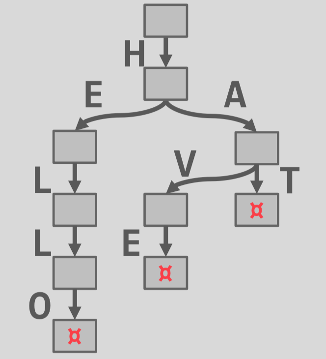
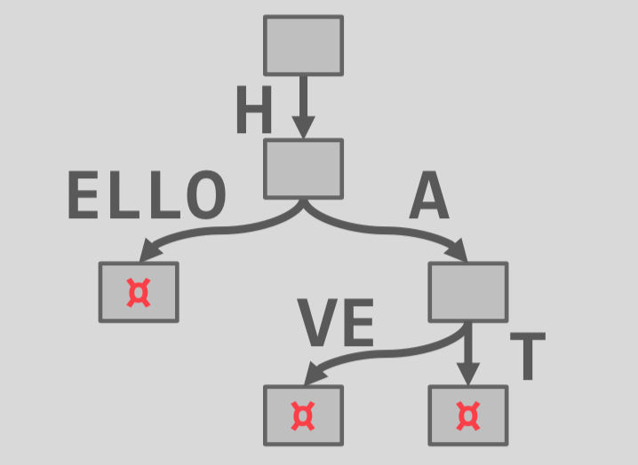

树索引（II）
隐式索引
大部分 DBMS 自动创建一个索引来强制进行完整性约束。
- 主键
- 唯一约束
- 外键（?）
CREATE TABLE foo ( id SERIAL PRIMARY KEY, val1 INT NOT NULL, val2 VARCHAR(32) UNIQUE ); CREATE UNIQUE INDEX foo_pkey ON foo (id); CREATE UNIQUE INDEX foo_val2_key ON foo (val2);
部分索引
创建一个表的子集上的索引。这可能会减小其大小和维护它的开销。
一个常用的使用例子是通过日期范围来分区索引。
- 每月、每年创建一个分离的索引。
CREATE INDEX idx_foo ON foo (a, b) WHERE c = 'WuTang'; SELECT b FROM foo WHERE a = 123 AND c = 'WuTang';
覆盖索引
如果处理查询所需的所有字段都在索引中可用，则DBMS不需要检索元组。
这减少了对DBMS缓冲池资源的争用。
CREATE INDEX idx_foo ON foo (a, b); SELECT b FROM foo WHERE a = 123;
索引包含列
函数/表达式索引
观察结论
最简单的实现动态有序索引的方式是使用排序链表。
所有操作都是线性搜索。平均复杂度：O(N)
跳跃表
跳跃表是一个数据结构，可以在有序的序列上进行快速查找。
基数树
key 以单个的字符表示，可以通过一个接一个前缀检查的方式来比较 key。
- 树的高度依赖 key 的长度
- 不需要平衡
- 叶节点的路径表示叶的 key
- key 被隐式存储，可以通过路径来构造
| Trie | Radix Tree |
|---|---|
|  |  |
| HELLO, HAT, HAVE |
观察结论
树索引对于点查找和范围查找很有用。
但是对于关键词查找则不友好。
- 从维基百科中找出所有包含单词 “Pavlo”的文章
倒排索引
倒排索引保存单词到记录的映射，记录中包含了这些单词。
- 有时也称之为全文查找索引
- 也称为古老（如旧）时代的一致性
大部分 DBMS 支持这个特性。
也有一些特殊的数据库系统。(elasticsearch, Solr, Sphinx)
查找类型
短语查找：找到包含以给定顺序的一系列单词的记录。
近似查找：查找两个单词出现在彼此的n个单词中的记录。
通配符查找：查找包含与某些模式匹配的单词的记录（例如，正则表达式）。
设计决策
决策#1：保存什么？
- 索引需要至少保存每个记录中的单词（以标点符号分割）。
- 还能保存访问次数、位置和其他元数据
决策#2：什么时候更新？
- 维护辅助数据结构以“分级”更新，然后批量更新索引。
结论
B+Tree 仍然是树索引的方法。
还有其他树索引，例如地理空间树索引。